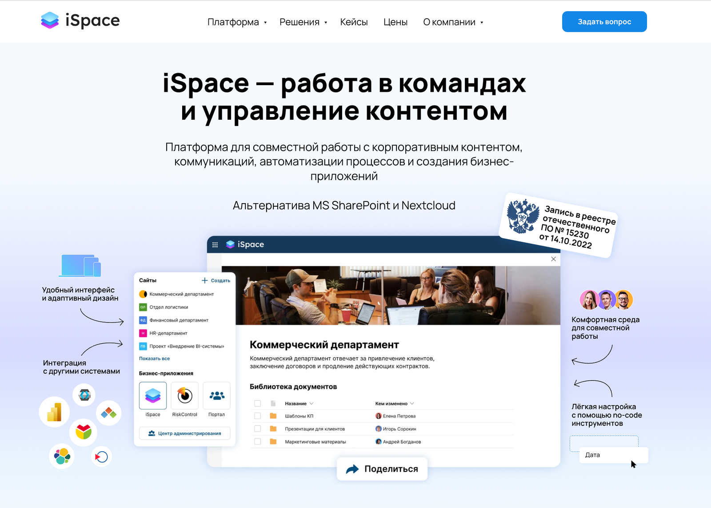
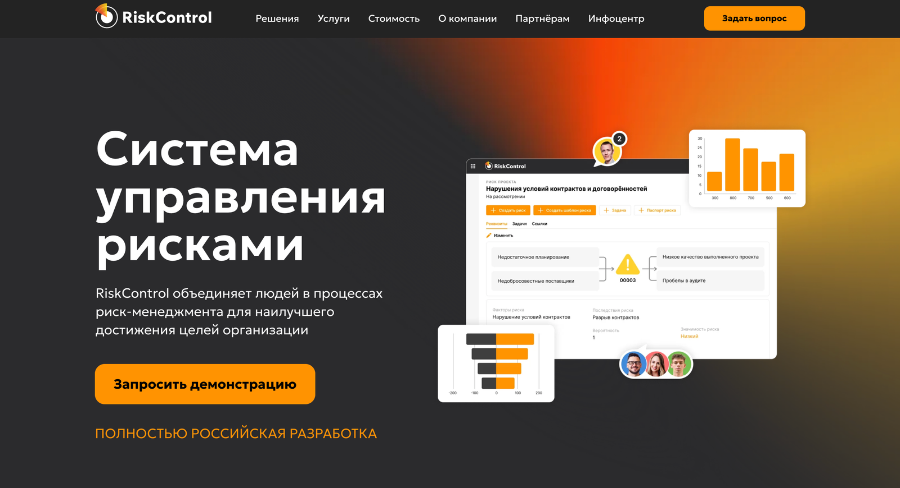
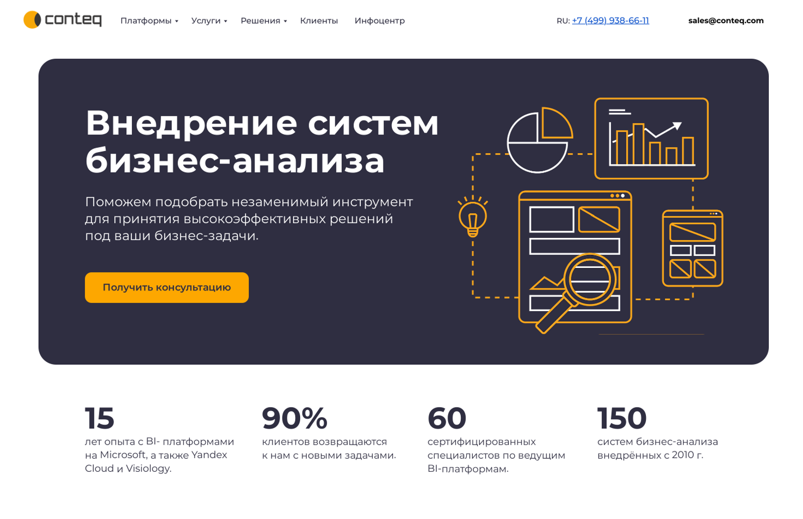

Лендинги
Продуктовые страницы для компании Контек и её направлений: структура, интерфейс, авторская графика и сборка на Tilda.
Как работала
Задача и аудитория
Разбирала продукт, аудиторию и цель страницы. Определяла, какие вопросы посетителя нужно закрыть до обращения в компанию.
Структура и прототип
Собирала содержание, выстраивала аргументацию и последовательность блоков. Прорабатывала навигацию и целевые действия в прототипе.
Визуальная концепция
Разрабатывала стиль страницы и самостоятельно отрисовывала графику: иллюстрации, схемы и визуальные материалы для объяснения продукта.
Адаптация и сборка
Готовила мобильную версию, собирала страницы на Tilda и проверяла читаемость, отступы, ссылки и формы на разных экранах.
iSpace
Представила enterprise-платформу через её задачи и возможности: от документов и процессов до настройки рабочего пространства.


RiskControl
Собрала продуктовую историю для системы управления рисками: назначение, возможности и сценарии применения.


Бизнес-аналитика
Разработала страницу направления BI: объяснение услуги, визуальные акценты и путь к обсуждению задачи.

